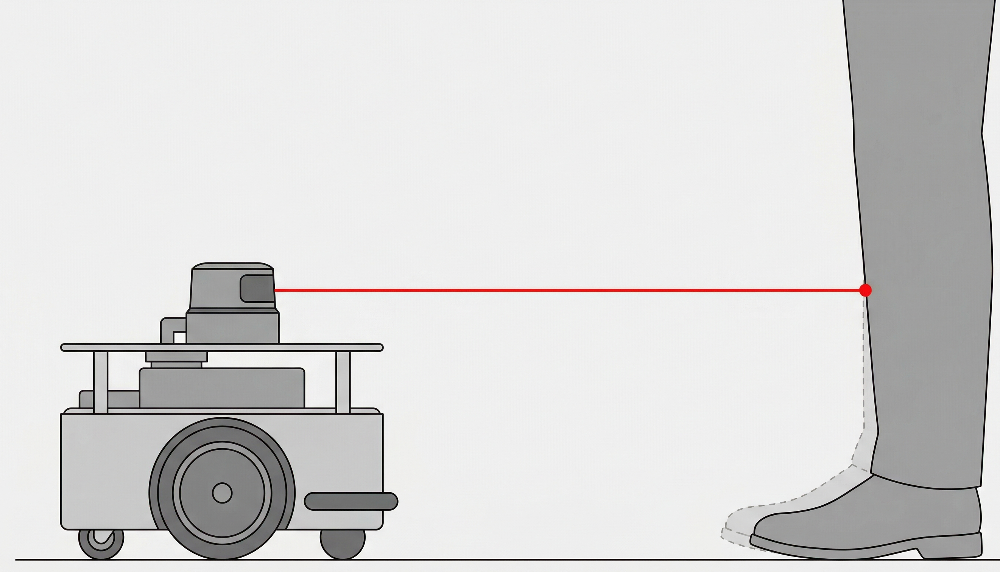
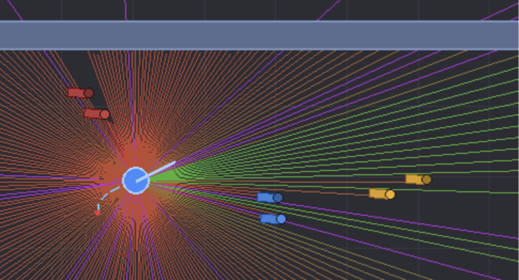
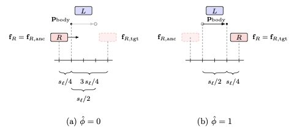
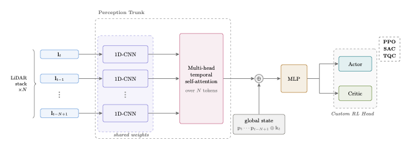

Learning Social Robot Navigation By Sensing Human Legs


Abstract
Robots navigating among pedestrians typically sense their surroundings with a 2D LiDAR mounted close to the ground. At that height, the sensor mostly sees moving legs rather than whole people, yet most learning-based navigation methods still treat pedestrians as simple shapes like circles. This paper addresses that gap with CALF (Convolutional Attention for Leg Features), an end-to-end neural architecture that combines convolutional layers, attention, and MLP to interpret leg motion directly from LiDAR scans and produce safe navigation commands. The CALF policy is trained using deep reinforcement learning algorithms within LegNav, a custom lightweight 2D simulator that combines 2D LiDAR ray tracing with a novel pedestrian gait model. The resulting policy is compared against classical and learning-based baselines in terms of navigation performance and social compliance. The approach is validated through real-world experiments via zero-shot deployment on a TurtleBot 4, yielding smooth and socially compliant trajectories. Written in JAX, the LegNav simulator enables the training of a deployment-ready CALF policy in under an hour on a single consumer GPU.
Why sensing legs matters
Social navigation asks a robot to reach its goal while avoiding collisions, keeping a comfortable distance from people, and yielding when a pedestrian blocks its path. A common shortcut in simulation is to represent each person as a single disc. That is convenient for planning, but it does not resemble what an ankle-height 2D LiDAR actually measures: two small clusters of returns from legs, changing position as the person walks.
The mismatch matters at close range. A laser beam can strike a shin while passing above the front of a shoe, leaving part of the pedestrian's footprint invisible to the sensor. A policy trained on idealized discs may therefore learn the wrong spatial and temporal cues. The paper addresses this at two levels: the Non-Slip Gait (NSG) model gives simulated pedestrians alternating feet and realistic shoe footprints, while the CALF policy learns directly from sequences of raw LiDAR scans rather than requiring a separate person detector and tracker.
LegNav brings these pieces together in a JAX-based 2D simulator. Its ray-traced LiDAR observations are used to train the policy with reinforcement learning, and the resulting controller is evaluated in unseen simulated layouts and deployed on a physical TurtleBot 4 without additional training.
The LiDAR Blind Spot & Non-Slip Gait Model

Overcoming partial observability. Most mobile robots are equipped with 2D LiDAR sensors mounted between 10 and 20 cm above the ground. At this height, the horizontal laser plane intersects only the lower legs of nearby pedestrians, completely missing the shoe protruding below the scan plane (left). To capture realistic leg dynamics and prevent artifacts like foot-skating, we propose the Non-Slip Gait (NSG) model (right). This explicitly anchors each foot to its last touchdown position during the stance phase, representing pedestrians as two alternatively moving feet rather than a single disc.
LegNav 2D Simulator
High-throughput physical simulation. The NSG model is embedded in LegNav, a custom lightweight 2D simulation environment implemented entirely in JAX. Each pedestrian's footprint is ray-traced individually by the simulated 2D LiDAR, replicating the sensor signatures a real robot encounters. This allows our policy to map raw sensor measurements directly to velocity commands while handling complex ankle-height observations.
CALF Network Architecture

From scans to actions. CALF (Convolutional Attention for Leg Features) is an end-to-end policy: it uses a short history of 2D LiDAR scans, the goal expressed relative to the robot, and the robot's kinematic state to generate linear and angular velocity commands. Processing several scans lets it infer motion from changing leg returns without explicitly detecting or tracking each pedestrian.
Spatial encoding. Each scan passes independently through the same three-layer 1D convolutional encoder. Sharing weights across frames means the same patterns are recognized throughout the scan history. The layers progressively aggregate neighboring LiDAR beams into features that can represent leg-shaped clusters; each frame is then reduced to a 64-dimensional token.
Temporal attention and fusion. A four-head self-attention layer relates those tokens across time to capture how the scene changes. Its output is combined with the goal history and current kinematic values, then passed through a two-layer MLP. Actor and critic heads turn the shared representation into a policy for the chosen reinforcement-learning method. The paper trains this architecture with PPO, SAC, and TQC and compares the resulting behaviors.
Experiments and Results
Training and generalization. The policies were trained across seven simulated situations, including crossing traffic, oncoming corridor traffic, bottlenecks, intersections, and stationary groups. The robot's start and goal positions and pedestrian positions were randomized. Evaluation then used six additional layouts that the policies had not seen during training, including an S-shaped corridor, connected rooms, converging crowds, and a long corridor. The paper also tests maximum robot speeds from 0.2 to 2.0 m/s.
What was measured. The benchmark records whether the robot reaches its goal, collides, or times out; how directly and quickly it travels; its closest distance to a person; the smoothness of its turning; and how often it maintains space or stops when someone occupies the frontal yield zone. These measures help distinguish a cautious controller that stalls from one that yields and then continues.
Comparison on unseen simulation scenarios
| Method | Success | Active collisions | Angular jerk | Yielding score |
|---|---|---|---|---|
| DWA | 77.7% | 0.9% | 1.5 rad/s³ | 64.5% |
| TAGD | 88.2% | 7.3% | 24.5 rad/s³ | 63.0% |
| CALF + PPO, disc pedestrians | 73.1% | 24.5% | 8.6 rad/s³ | 2.9% |
| CALF + PPO | 95.1% | 3.3% | 6.8 rad/s³ | 32.4% |
| CALF + SAC | 88.3% | 10.1% | 24.3 rad/s³ | 14.8% |
| CALF + TQC | 82.8% | 14.6% | 11.0 rad/s³ | 5.2% |
Selected measures from Table 4 of the paper. Angular jerk is lower for smoother turning. Results use unseen test scenarios with maximum speed sampled between 0.2 and 2.0 m/s.
Algorithm comparison. CALF trained with PPO achieves the highest success rate in the aggregate benchmark (95.1%) and the lowest active collision rate among the learning-based methods shown in the paper (3.3%). SAC and TQC also reach goals, but have higher active collision rates; PPO produces smoother turns than either. DWA is very cautious and has fewer active collisions, yet its 20.1% timeout rate limits its success to 77.7%. The yielding score should be read alongside progress: stopping for a person is useful only if the robot can resume its route.
Does the leg model help? The paper repeats PPO training with pedestrians represented as discs instead of articulated foot pairs. In that ablation, success drops from 95.1% to 73.1%, active collisions rise from 3.3% to 24.5%, and the yielding score falls from 32.4% to 2.9%. A plain MLP policy also reaches only 64.5% success, supporting the value of the CALF perception architecture. These comparisons isolate why realistic leg-level observations and an architecture that can process their motion matter.
Real-World Deployment
The PPO-trained CALF policy was transferred without fine-tuning to a TurtleBot 4 with an ankle-height RPLidar A1. In indoor experiments with five to six people, the robot navigated between waypoints, avoided pedestrians in advance, and yielded when a person blocked the available passing space. The video below shows this qualitative real-world validation; the percentages above are from the separate simulation benchmark.
Youtube Video
BibTeX
@article{Vaglio2026LegNav,
title={Learning Social Robot Navigation By Sensing Human Legs},
author={Vaglio, Alberto and Garulli, Andrea and Giannitrapani, Antonio and Quartullo, Renato and Van Der Meer, Tommaso},
journal={Preprint submitted to Elsevier},
year={2026}
}